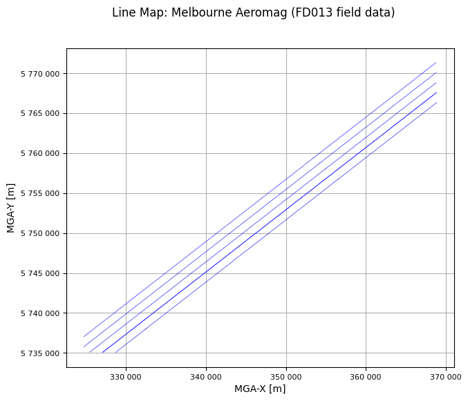

Prepare Aeromagnetic data¶
This tutorial demonstrates the preparation of XYZ airborne magnetic data for QC.
First, import the required python packages, …
from pathlib import Path
import galileoQC as qc
… then set the path to the geowhizz files.
This is all very much step by step to illustrate the process, and you can certainly compress some of these steps in your own work.
dx = Path(r'./MagData/FD013_Mag.xyz')
dh = dx.with_suffix(".hdf5")
# asegToHdf fails if the file exists so delete it if it does. CHECK
if dx.with_suffix('.hdf5').exists():
dx.with_suffix('.hdf5').unlink()
The Measured Survey Data
dh = qc.xyzToHDF(dx, projectName='Melbourne Aeromag', verbose=True)
Accessing XYZ data in MagData/FD013_Mag.xyz.
First few records are:
/
/
/ LINE FLIGHT YEAR DOY FTIME MGA-X MGA-Y
MGA-Z MSL-Z LAT LONG DEM DIURNAL
COMPMAG DCMAG IGRFMAG LVLDMAG
Line 2461.01
Found 3 header records
Found 12 lines
Found 17 fields
Channel precisions (number of decimal places):
[2 0 0 0 2 2 2 2 2 7 7 2 3 3 3 3 3]
Creating: MagData/FD013_Mag.hdf5
About to add data for line 2461.01 Lcount 1 / 12
About to add data for line 2461.02 Lcount 2 / 12
About to add data for line 2461.03 Lcount 3 / 12
About to add data for line 2463.0 Lcount 4 / 12
About to add data for line 2463.02 Lcount 5 / 12
About to add data for line 2463.04 Lcount 6 / 12
About to add data for line 2465.0 Lcount 7 / 12
About to add data for line 2465.02 Lcount 8 / 12
About to add data for line 2467.01 Lcount 9 / 12
About to add data for line 2467.02 Lcount 10 / 12
About to add data for line 2469.0 Lcount 11 / 12
About to add data for line 2469.01 Lcount 12 / 12
block_name = 'FD013 field data'
qc.updateProject(dh, acquirer='SGL', blockID=block_name)
qc.updateCoordFrame(dh,
lat='LAT',
lon='LONG',
x='MGA-X',
y='MGA-Y',
time='FTIME',
alt='MGA-Z',
geoDatum='GDA2020',
htDatum='GRS80',
projection='UTM',
utmz='55')
Setting BlockID = FD013 field data for FD013_Mag.hdf5.
Setting Acquirer = SGL for FD013_Mag.hdf5.
Changed CoordFrame attribute(s) for FD013_Mag.hdf5.
qc.updateLineAttributes(dh, line_type='SGL_GA', flight_chan='FLIGHT')
Setting Line attributes for MagData/FD013_Mag.hdf5 to include flight numbers from FLIGHT.
NO ACTION TAKEN ON LINE_TYPE - no plan file provided.
Setting Line attributes for FD013_Mag.hdf5 according to the SGL_GA scheme.
qc.updateChannelAttributes(dh, 'MGA-X', units='m')
qc.updateChannelAttributes(dh, 'MGA-Y', units='m')
qc.updateChannelAttributes(dh, 'MGA-Z', units='m')
qc.updateChannelAttributes(dh, 'MSL-Z', units='m')
qc.updateChannelAttributes(dh, 'DEM', units='m')
qc.updateChannelAttributes(dh, 'LAT', units='deg')
qc.updateChannelAttributes(dh, 'LONG', units='deg')
qc.updateChannelAttributes(dh, 'DIURNAL', units='nT')
qc.updateChannelAttributes(dh, 'COMPMAG', units='nT')
qc.updateChannelAttributes(dh, 'DCMAG', units='nT')
qc.updateChannelAttributes(dh, 'IGRFMAG', units='nT')
qc.updateChannelAttributes(dh, 'LVLDMAG', units='nT')
Changed channel attribute(s) for MGA-X in FD013_Mag.hdf5.
Changed channel attribute(s) for MGA-Y in FD013_Mag.hdf5.
Changed channel attribute(s) for MGA-Z in FD013_Mag.hdf5.
Changed channel attribute(s) for MSL-Z in FD013_Mag.hdf5.
Changed channel attribute(s) for DEM in FD013_Mag.hdf5.
Changed channel attribute(s) for LAT in FD013_Mag.hdf5.
Changed channel attribute(s) for LONG in FD013_Mag.hdf5.
Changed channel attribute(s) for DIURNAL in FD013_Mag.hdf5.
Changed channel attribute(s) for COMPMAG in FD013_Mag.hdf5.
Changed channel attribute(s) for DCMAG in FD013_Mag.hdf5.
Changed channel attribute(s) for IGRFMAG in FD013_Mag.hdf5.
Changed channel attribute(s) for LVLDMAG in FD013_Mag.hdf5.
qc.reportLines(dh)
0 even lines, 0 odd lines.
12 traverse lines, 0 control lines, 0 not classified.
0 planned lines, 12 unplanned lines, total 12.
Whizz Version 1.0
Odd Lines:
[]
Even Lines:
[]
Traverse Lines:
['2461.010', '2461.020', '2461.030', '2463.000', '2463.020',
'2463.040', '2465.000', '2465.020', '2467.010', '2467.020',
'2469.000', '2469.010']
Control Lines:
[]
qc.reportSampling(dh)
Whizz Version 1.0
Acquirer: SGL
BlockID: FD013 field data
ProjectName: Melbourne Aeromag
Sample time and distance statistics
Min = 0.100 s, 5.1 m
Max = 0.100 s, 6.6 m
Mean = 0.100 s, 6.0 m
Stdev = 7.13e-12 s, 0.2 m
qc.reportChannels(dh, verbose=True)
Whizz Version 1.0
17 channels:
channel units description
--------------------------------------------------
COMPMAG nT
DCMAG nT
DEM m
DIURNAL nT
DOY
FLIGHT
FTIME
IGRFMAG nT
LAT deg
LINE
LONG deg
LVLDMAG nT
MGA-X m
MGA-Y m
MGA-Z m
MSL-Z m
YEAR
Make a survey flight-line map
A map showing the flown lines (blue) against the planned lines (red). This provides a visual check that the lines are in about the right location and shows the amount of the survey flown so far. The map title, and the x and y axes are labelled using metadata stored in the geoWhizz file.
qc.linesMap([Path(dh)])
No file of planned data provided.
